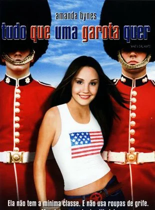
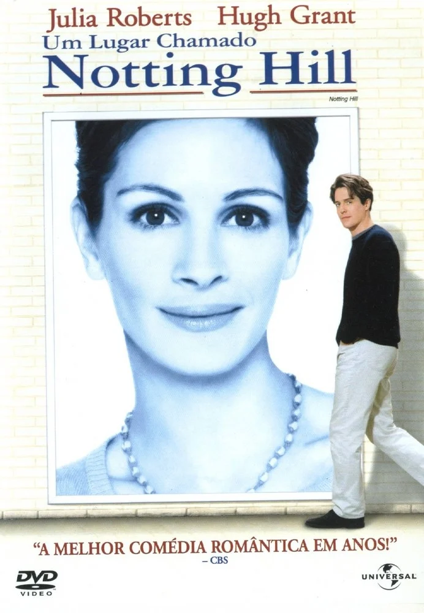
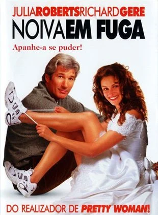
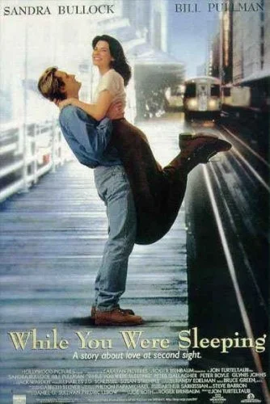

Maldita Sorte (Good Luck Chuck, 2007): Charlie Logan (Dane Cook) é um dentista que, após uma maldição, descobre que qualquer mulher com quem ele se envolve encontra o amor verdadeiro com o próximo homem que conhece.
...
Quando ele se apaixona por Cam (Jessica Alba), uma mulher divertida e desajeitada, Charlie tenta quebrar o ciclo e conquistar seu coração sem perder o dela para outro.
O filme mistura comédia e romance, explorando temas como azar no amor e o poder das coincidências.
Tudo Que Uma Garota Quer

Sinopse
Tudo Que Uma Garota Quer (What a Girl Wants, 2003): Daphne (Amanda Bynes) é uma jovem americana que decide viajar para a Inglaterra para conhecer seu pai, Henry Dashwood (Colin Firth), um aristocrata britânico.
...
Apesar das diferenças culturais, Daphne tenta se encaixar na vida sofisticada da família e ao mesmo tempo permanecer fiel a si mesma.
O filme explora questões de identidade, pertencimento e o poder do amor familiar.
Quero Ficar Com Polly
Sinopse
Quero Ficar com Polly (Along Came Polly, 2004): Após ser abandonado pela esposa na lua de mel, Reuben (Ben Stiller), um homem cauteloso e metódico, reencontra Polly (Jennifer Aniston), uma amiga de infância impulsiva e cheia de vida.
...
Apesar de serem opostos em quase tudo, Reuben se vê cada vez mais atraído pelo jeito despreocupado de Polly e começa a repensar suas próprias atitudes.
O filme explora a ideia de equilíbrio e o desafio de sair da zona de conforto para viver plenamente.
Como se Fosse a Primeira Vez
Sinopse
Como Se Fosse a Primeira Vez (50 First Dates, 2004): Henry (Adam Sandler) é um veterinário que se apaixona por Lucy (Drew Barrymore), uma mulher que sofre de perda de memória de curto prazo e esquece tudo a cada novo dia.
...
Determinado a conquistá-la, Henry se propõe a fazer Lucy se apaixonar por ele diariamente.
Com humor e romance, o filme fala sobre o poder da perseverança e a profundidade do amor verdadeiro.
Um Lugar Chamado Notting Hill

Sinopse
Um Lugar Chamado Notting Hill (Notting Hill, 1999): William Thacker (Hugh Grant) é um pacato dono de livraria no bairro de Notting Hill, em Londres, que vê sua vida mudar ao conhecer a famosa atriz Anna Scott (Julia Roberts).
...
Os dois se apaixonam, mas precisam lidar com as diferenças entre seus mundos e com a pressão da fama.
Esta comédia romântica explora as complexidades do amor e as dificuldades de manter um relacionamento diante de realidades tão opostas.
Noiva em Fuga

Sinopse
Noiva em Fuga (Runaway Bride, 1999): Maggie Carpenter (Julia Roberts) é uma mulher conhecida por fugir de seus próprios casamentos, deixando os noivos no altar. O jornalista Ike Graham (Richard Gere) decide escrever uma matéria sobre ela, mas, ao conhecê-la de perto, começa a perceber que há mais em sua história do que ele imaginava.
...
Enquanto Maggie tenta entender seus medos e inseguranças, Ike vê sua opinião mudar, e o amor começa a surgir entre eles.
A história aborda o medo de compromisso e a importância de se autoconhecer antes de entrar em um relacionamento.
Ingresso Para o Paraíso
Sinopse
Ingresso para o Paraíso (Ticket to Paradise, 2022): Nesta comédia romântica, os ex-cônjuges David (George Clooney) e Georgia (Julia Roberts) se reencontram em uma viagem para Bali, onde tentam impedir que a filha deles, Lily, cometa o mesmo "erro" que eles cometeram ao se casar jovem e impulsivamente.
...
Durante a missão para sabotar o casamento, David e Georgia acabam redescobrindo o que sentem um pelo outro.
O filme explora a dinâmica de família, as segundas chances e a capacidade de amar novamente.
Comer, Rezar, Amar
Sinopse
Comer, Rezar, Amar (Eat Pray Love, 2010): Baseado em uma história real, o filme acompanha Liz Gilbert (Julia Roberts), que após um divórcio traumático, decide embarcar em uma jornada de autoconhecimento e cura.
...
Ela passa por três destinos: Itália (onde redescobre o prazer), Índia (onde explora a espiritualidade) e Bali (onde busca equilíbrio e, talvez, um novo amor).
O filme aborda temas como identidade, autodescoberta e a importância de se reconectar com o que realmente importa.
Enquanto Você Dormia

Sinopse
Enquanto Você Dormia (While You Were Sleeping, 1995): Lucy (Sandra Bullock), uma solitária funcionária de metrô, salva Peter, um homem que admira de longe, após ele sofrer um acidente.
...
Quando ele fica em coma, a família dele a confunde com sua noiva, e Lucy, sem coragem para contar a verdade, acaba sendo acolhida por eles. Conforme o tempo passa, ela começa a se apaixonar pelo irmão de Peter, Jack.
O filme traz uma mistura de comédia e romance, destacando o poder das conexões inesperadas.
Amor à Segunda Vista
Sinopse
Amor à Segunda Vista (Two Weeks Notice, 2002): A advogada idealista Lucy (Sandra Bullock) trabalha para o milionário excêntrico George Wade (Hugh Grant), mas, cansada das demandas dele, decide pedir demissão.
...
Enquanto Lucy tenta se afastar, George percebe o quanto depende dela, e ambos começam a ver que talvez tenham sentimentos um pelo outro.
A história explora as transformações que o amor e a convivência podem trazer, com boas doses de humor.